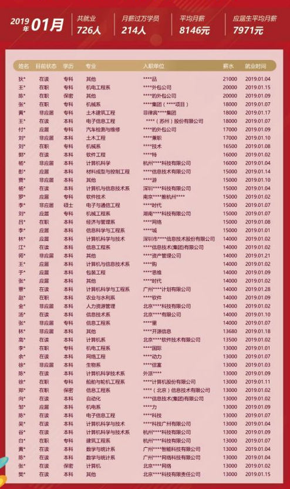
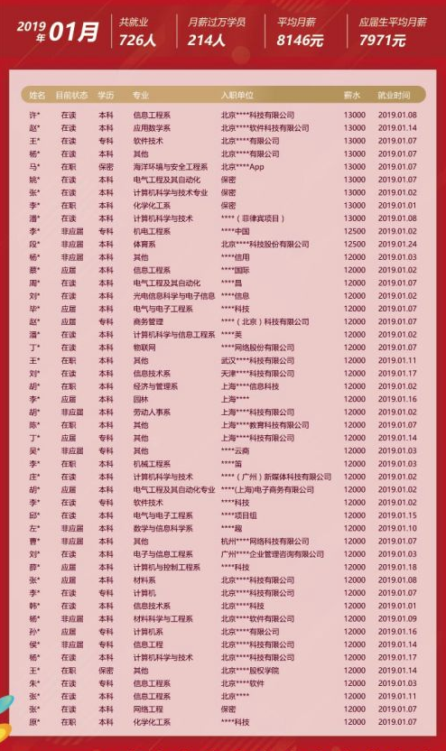
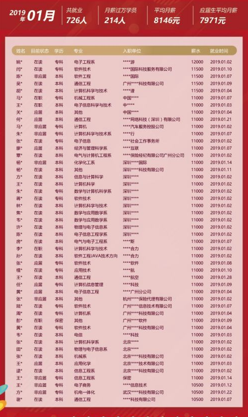

大家对春节假期的欢聚、胡吃海喝还意犹未尽吧?不管怎么样，2019年已经悄然而至，新的征程已经拉开序幕。那些你还未能实现的梦想，还没达到的远方，还在等着你动身前往。各行各业已经纷纷忙碌起新一年的工作，大家互祝开工大吉!
新年伊始，智高教育传来了就业好消息。智高学子用行动证明了，技能真的能够改变命运。前方的路或许充满崎岖，唯有奋斗才能不惧风雨，一个看似普通的改变，都可能改变普通的自己，为了梦想去奋斗，永远都不会太迟。下面我们一起来见证智高学员的新年就业喜讯!
以下是智高教育2019年1月份就业数据一览：
1月共就业726人;
平均月薪8146元;
月薪过万214人;
应届生176名;
应届生平均月薪7971元。



我们坚信，2019年，越奋斗越幸福!我们当下的新时代，是奋斗者的时代。只有奋斗的人生才称得上幸福的人生。对于智高学子而言，大家都在努力奔跑，他们都是追梦人。
智高教育已经毕业的同学们，给了自己和家人一个满意的交代。这离不开自己坚持不懈的努力，也离不开智高“用良心做教育”的真实理念，全部采用讲师面授，以实战项目做指导，手把手纯面授，面对面现场教学，培养优质的开发人才，助力学员们实现高薪就业梦!
智高教育采用全程面授高品质、高成本培养模式，教学大纲紧跟企业需求，拥有全国一体化就业服务，班级平均薪水普遍高于同行业水平，做到了毕业学员业内较高薪水，成为学员信赖的IT职业教育品牌。
无论在学员中的评价，还是用人单位的口碑，智高教育都是首屈一指，这是因为智高教育一直以“不塑庸才，只造精英”为企业追求。智高教育是广大大学生进入IT行业不错的选择。想了解课程的年轻人，可以来免费的试听课程，相信一定会有所收获。